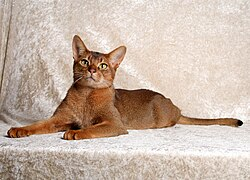
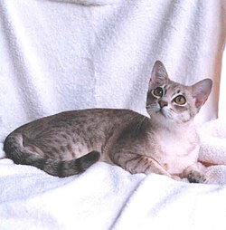

Посмотреть так же: Породы собак.
Абиссинская
Абисси́нская кошка — порода домашних кошек,
Австралийский мист
Австралийская дымчатая кошка,
или австралийский мист (англ. Australian Mist), — порода домашних кошек,
выведенная в Австралии на основе местных дворовых кошек, завезённых сюда,
с кошками бирманской и абиссинской породы.

Азиатская (табби)
Азиатская табби (англ. Asian Tabby) — порода кошек,
выведенная в Великобритании и относящаяся к группе азиатских короткошёрстных кошек.
Иное название породы — Азиатская кошка